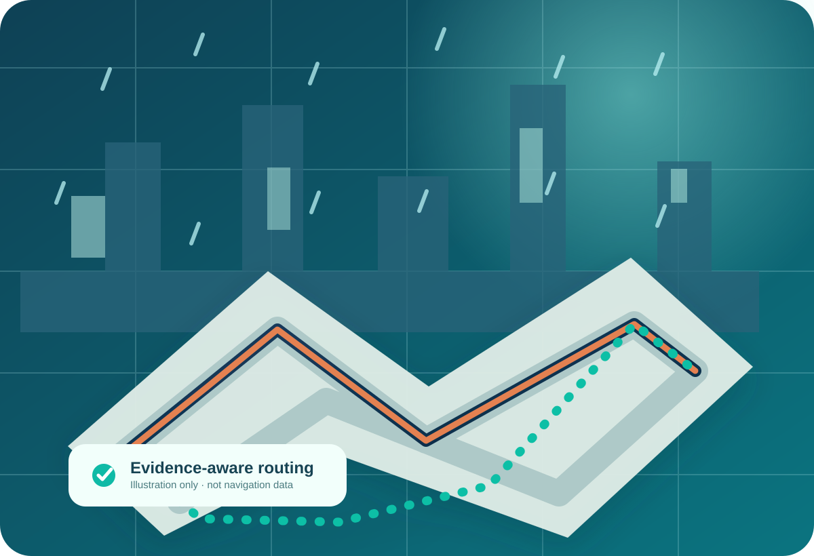

Evidence-aware routingSee how the algorithm
See how the algorithm
compares safer-looking routes.
A standalone interactive exercise generated from our original pure TypeScript routing engine. All roads and rainfall in this lab are imaginary.

Plan a comparison
Preparing the synthetic map…
Calculation & provenance
Non-location-based. Nothing is sent to a server except ordinary static file requests. There is no GPS, login, analytics or traffic service in this lab.
Artificial road grid · original SVG
Synthetic street Fastest baseline Lower-index candidate